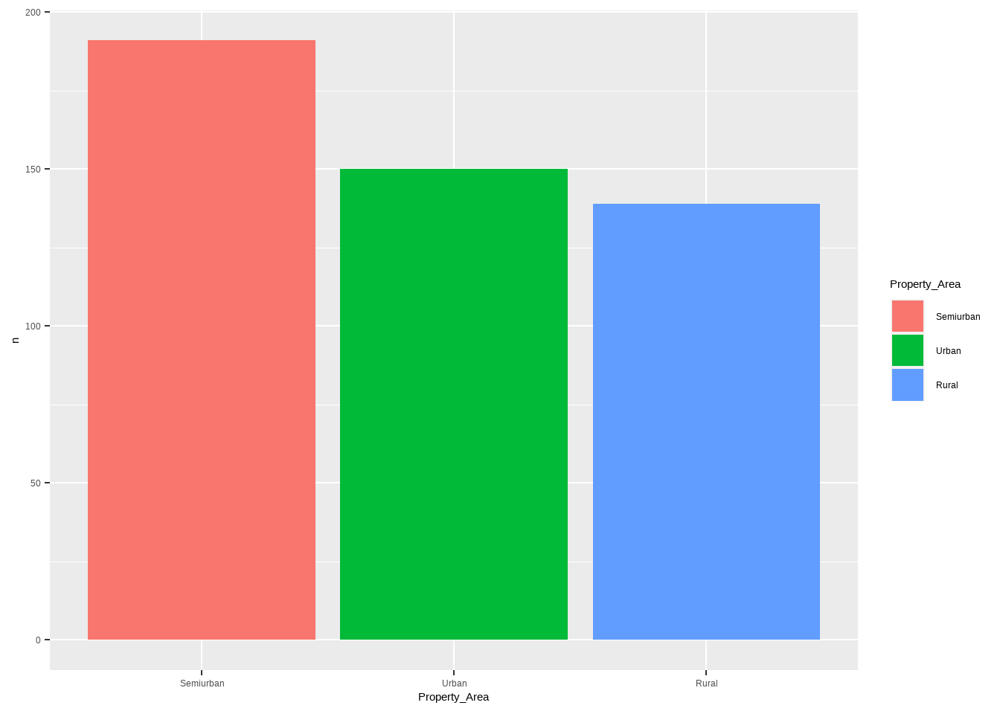
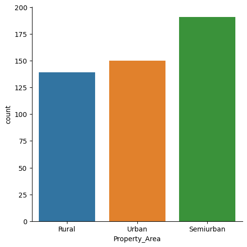
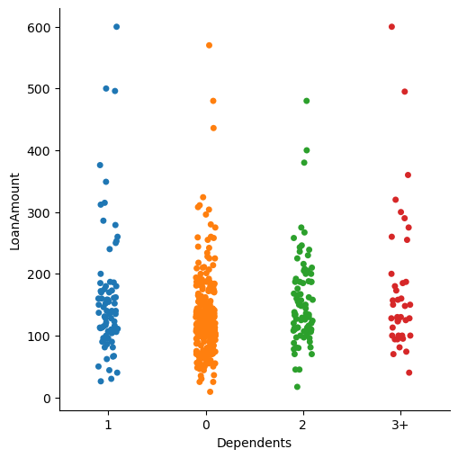
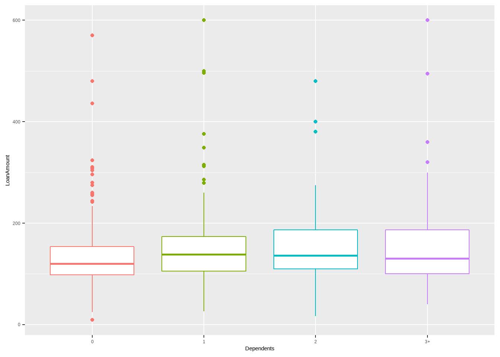
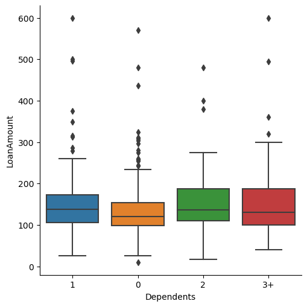

Categorical variables are more important than what you think
In many projects and datasets, we may face categorical features, among other feature types. This type of data shows qualitative information in datasets and has some finite categories. In this Dotto, we want to work with some different kinds of categorical features.

Mahyar Sharifi
Mahyar Sharifi
Instructions:
The Loan dataset is home loans information for Dream Housing Finance company. It contains 13 different features about their applicants. These features and their types are listed below:
Loan ID : Applicants ID
Gender : Categorical (Female or Male)
Married : Categorical (Yes or No)
Dependents : Categorical (0, 1, 2, or 3+)
Education : Categorical (Graduated or Not Graduated)
Self-Employed : Categorical (Yes or No)
Applicant Income : Numerical
Co-applicant Income : Numerical
Loan Amount : Numerical
Loan-Amount-Term : Categorical (10 categories)
Credit History : Binary (1 or 0)
Property Area : Categorical(Semiurban, Urban or Rural)
Loan Status : Categorical (Y or N)
In this Dotto, we want to count different categories in each categorical data, use suitable plots for visualization, encode and create dummy features.
Categorical data divides into two main classes:
Nominal categorical data: In this type of data, we do not have any ordinal priority—for instance, weather conditions, medical conditions, and hair colors.
Ordinal categorical data: In against an ordinal type, has ordinal priority among categories.
In the Loan dataset, Property Area and Education features are the examples of the nominal type, and Dependents is the example of the ordinal type.
The Loan dataset is home loans information for Dream Housing Finance company. It contains 13 different features about their applicants. These features and their types are listed below:
Loan ID : Applicants ID
Gender : Categorical (Female or Male)
Married : Categorical (Yes or No)
Dependents : Categorical (0, 1, 2, or 3+)
Education : Categorical (Graduated or Not Graduated)
Self-Employed : Categorical (Yes or No)
Applicant Income : Numerical
Co-applicant Income : Numerical
Loan Amount : Numerical
Loan-Amount-Term : Categorical (10 categories)
Credit History : Binary (1 or 0)
Property Area : Categorical(Semiurban, Urban or Rural)
Loan Status : Categorical (Y or N)
In this Dotto, we want to count different categories in each categorical data, use suitable plots for visualization, encode and create dummy features.
Categorical data divides into two main classes:
Nominal categorical data: In this type of data, we do not have any ordinal priority—for instance, weather conditions, medical conditions, and hair colors.
Ordinal categorical data: In against an ordinal type, has ordinal priority among categories.
In the Loan dataset, Property Area and Education features are the examples of the nominal type, and Dependents is the example of the ordinal type.
Codes:
#Import Packages
library(dplyr)
library(ggplot2)
#Load Dataset
data = read.csv('loan_data_set.csv',na.strings=c(""))
#Drop NA values
data = na.omit(data)
#Show five sample of dataset
sample_n(data, 5)#Import packages
import pandas as pd
import seaborn as sns
import numpy as np
#Load dataset
data = pd.read_csv('loan_data_set.csv')
#Show dataset information
data.info()
#Drop Na
data = data.dropna()
#show dataset samples
data.sample(5)Results:
## Loan_ID Gender Married Dependents Education Self_Employed
## 1 LP001702 Male No 0 Graduate No
## 2 LP002187 Male No 0 Graduate No
## 3 LP002841 Male Yes 0 Graduate No
## 4 LP001800 Male Yes 1 Not Graduate No
## 5 LP002505 Male Yes 0 Graduate No
## ApplicantIncome CoapplicantIncome LoanAmount Loan_Amount_Term
## 1 3418 0 127 360
## 2 2500 0 96 480
## 3 3166 2064 104 360
## 4 2510 1983 140 180
## 5 4333 2451 110 360
## Credit_History Property_Area Loan_Status
## 1 1 Semiurban N
## 2 1 Semiurban N
## 3 0 Urban N
## 4 1 Urban N
## 5 1 Urban N## <class 'pandas.core.frame.DataFrame'>
## RangeIndex: 614 entries, 0 to 613
## Data columns (total 13 columns):
## # Column Non-Null Count Dtype
## --- ------ -------------- -----
## 0 Loan_ID 614 non-null object
## 1 Gender 601 non-null object
## 2 Married 611 non-null object
## 3 Dependents 599 non-null object
## 4 Education 614 non-null object
## 5 Self_Employed 582 non-null object
## 6 ApplicantIncome 614 non-null int64
## 7 CoapplicantIncome 614 non-null float64
## 8 LoanAmount 592 non-null float64
## 9 Loan_Amount_Term 600 non-null float64
## 10 Credit_History 564 non-null float64
## 11 Property_Area 614 non-null object
## 12 Loan_Status 614 non-null object
## dtypes: float64(4), int64(1), object(8)
## memory usage: 62.5+ KB## Loan_ID Gender Married ... Credit_History Property_Area Loan_Status
## 428 LP002369 Male Yes ... 1.0 Rural Y
## 471 LP002517 Male Yes ... 0.0 Rural N
## 10 LP001024 Male Yes ... 1.0 Urban Y
## 227 LP001758 Male Yes ... 1.0 Semiurban Y
## 287 LP001926 Male Yes ... 1.0 Rural Y
##
## [5 rows x 13 columns]Instructions:
It is essential to know the frequency of each category in categorical features. For this purpose, we can use table to create a table or use ggplot to plot a barplot. For example, in the Loan dataset, we have some categorical features like Property Area. This feature has three categories, and we want to know the most frequent category. We can use both table and plot to identify it. In this dot, first we use fct_reorder in forcats package to sort categories by their frequency then use ggplot to plot a barplot.
It is essential to know the frequency of each category in categorical features. For this purpose, we can use value_counts to create a table or use catplot to plot a barplot. For example, in the Loan dataset, we have some categorical features like Property Area. This feature has three categories, and we want to know the most frequent category. We can use both table and plot to identify it.
Codes:
#Count frequency of 'Property_Area' categories
table(data$Property_Area)
#Import packages
library(ggplot2)
library(forcats)
#Plot bar plot for 'Property_Area' feature
data %>%
count(Property_Area) %>%
mutate(Property_Area =
fct_reorder(Property_Area, n, .desc = TRUE)) %>%
ggplot(aes(x = Property_Area,
y = n,
fill=Property_Area))+
geom_bar(stat = 'identity') #Count frequency of 'Property_Area' categories
print(data['Property_Area'].value_counts())
#Plot bar plot for 'Property_Area' feature
sns.catplot(data = data,
x = 'Property_Area',
kind = 'count')Results:
##
## Rural Semiurban Urban
## 139 191 150
## Semiurban 191
## Urban 150
## Rural 139
## Name: Property_Area, dtype: int64
Instructions:
Sometimes it is good to know the variation in numerical features in each category in a categorical feature. For this purpose, we can plot a stripplot. For example, we want to show the Loan Amount variation in each Dependents category in the Loan dataset. We can plot a strip plot by ggplot and geom_jitter in the ggplot2 package.
Sometimes it is good to know the variation in numerical features in each category in a categorical feature. For this purpose, we can plot a stripplot. For example, we want to show the Loan Amount variation in each Dependents category in the Loan dataset. We can plot a strip plot by catplot in the seaborn package and set the kind with the strip.
Codes:
#PLot a stripplot for each 'Dependets' categories for 'LoanAmount'
ggplot(data, aes(x = Dependents, y = LoanAmount, color = Dependents))+
geom_jitter()+
theme(legend.position = "none")#PLot a stripplot for each 'Dependets' category for 'LoanAmount'
sns.catplot(data = data,
x = 'Dependents',
y = 'LoanAmount')Results:


Instructions:
In the last dot, we may see some outliers in some categories. One of the good ways to identify outliers is to plot the box plot. For this purpose, we can use geom_boxplot to create a boxplot for each category. As we can see in the box plot, the zero dependents category has many outliers.
In the last dot, we may see some outliers in some categories. One of the good ways to identify outliers is to plot the box plot. For this purpose, we can use catplot and set the kind with the box to create a boxplot for each category. As we can see in the box plot, the zero dependents category has many outliers.
Codes:
#PLot a boxplot for each 'Dependets' categories for 'LoanAmount'
ggplot(data, aes(x=Dependents,
y=LoanAmount,
color = Dependents)) +
geom_boxplot() +
theme(legend.position = "none")#PLot a boxplot for each 'Dependets' categories for 'LoanAmount'
sns.catplot(data = data,
x = 'Dependents',
y = 'LoanAmount',
kind = 'box')Results:


Instructions:
Feature engineering is one of the most crucial processes to prepare categorical data for machine learning projects. In feature engineering, we use some transformation techniques to transform categorical data into some numerical features. For this purpose, we can use the LabelEncoder in superml package to encode features. In this dot, we use LabelEncoder to transform Property Area categories into numeric values.
Feature engineering is one of the most crucial processes to prepare categorical data for machine learning projects. In feature engineering, we use some transformation techniques to transform categorical data into some numerical features. For this purpose, we can use the LabelEncoder() in sklearn package to encode features. In this dot, we use LabelEncoder to transform Property Area categories into numeric values.
Codes:
#Import superml package
library(superml)
#Select 'property_Area'
df_Property_Area <- data %>% select(Property_Area)
#Fit and Transform LabelEncoder
Property_Area_encoded <- LabelEncoder$new()
print(Property_Area_encoded$fit(df_Property_Area$Property_Area))
df_Property_Area$Property_Area_encoded <-
Property_Area_encoded$fit_transform(
df_Property_Area$Property_Area)#Import LabelEncoder from sklearn
from sklearn.preprocessing import LabelEncoder
#Fit and Transform LabelEncoder
le = LabelEncoder()
Property_labels = le.fit_transform(
data[['Property_Area']])
#Show encoded categories
genre_mappings = {index: label for index,
label in enumerate(le.classes_)}
print(genre_mappings)Results:
## [1] TRUE## C:\Users\Mahyar\ANACON~1\lib\site-packages\sklearn\utils\validation.py:72: DataConversionWarning: A column-vector y was passed when a 1d array was expected. Please change the shape of y to (n_samples, ), for example using ravel().
## return f(**kwargs)## {0: 'Rural', 1: 'Semiurban', 2: 'Urban'}Instructions:
Use the One-Hot (or dummy) encoding scheme is another way for feature engineering for categorical data. In this scheme, each category transforms into one binary feature. For example, if a categorical feature has m categories, then after One-Hot transformation, we have m binary feature, and every instance has only one of the values as 1. In python, we can use the dummy_cols infastDummies to use One-Hot transformation. In this dot, we transform Property Area categories into three binary features.
Use the One-Hot encoding scheme is another way for feature engineering for categorical data. In this scheme, each category transforms into one binary feature. For example, if a categorical feature has m categories, then after One-Hot transformation, we have m binary feature, and every instance has only one of the values as 1. In python, we can use the OneHotEncoder() insklearn to use One-Hot transformation. In this dot, we transform Property Area categories into three binary features.
Codes:
#Import fastDummies package
library(fastDummies)
#Dummy 'Propert_Area' categories
sample_n(dummy_cols(df_Property_Area,
select_columns = c("Property_Area")),5)#Import LabelEncoder from sklearn
from sklearn.preprocessing import OneHotEncoder
#Fit and Transform OneHotEncoder
ohe = OneHotEncoder()
Property_one_hot = ohe.fit_transform(
data[['Property_Area']])
#Show encoded categories as pandas dataframe
ohe_features = pd.DataFrame(Property_one_hot.toarray(),
columns=
['Rural', 'Semiurban', 'Urban'])
ohe_features.head(5)Results:
## Property_Area Property_Area_encoded Property_Area_Rural
## 1 Semiurban 2 0
## 2 Urban 1 0
## 3 Rural 0 1
## 4 Semiurban 2 0
## 5 Rural 0 1
## Property_Area_Semiurban Property_Area_Urban
## 1 1 0
## 2 0 1
## 3 0 0
## 4 1 0
## 5 0 0## Rural Semiurban Urban
## 0 1.0 0.0 0.0
## 1 0.0 0.0 1.0
## 2 0.0 0.0 1.0
## 3 0.0 0.0 1.0
## 4 0.0 0.0 1.0Instructions:
Sometimes we want to change the category name in order manually. For example, the Dependents feature is an ordinal category in the Loan dataset, and we want to change just ‘3+’ into ‘3’. In this situation, with the recode_factor function, we can define any name for categories.
Sometimes we want to change the category name in order manually. For example, the Dependents feature is an ordinal category in the Loan dataset, and we want to change just ‘3+’ into ‘3’. In this situation, with the map function, we can define any name for categories.
Codes:
#Select 'Dependents' feature
df_dependents <- data %>%
select(Dependents)
#Recode the levels
df_dependents$Dependents <- recode_factor(df_dependents$Dependents,
"3+" = "3" )#Create mapping dictionary for 'Dependents' categories
dependents_map = { '0' : 0, '1' : 1, '2' : 2, '3+' : 3}
data['Dependents'] = data['Dependents'].
map(dependents_map)
#Print new categories
print(data['Dependents'].unique())Results:
## [1 0 2 3]Instructions:
We have features like Gender, Married, Education, Self-Employed, and Loan-Status in the Loan dataset with only two categories. In this situation, it is better to transform these features into binary features. For this purpose, we can use dummy_cols in fastdummies package then remove first column or encode manually with the recode_factor function.
We have features like Gender, Married, Education, Self-Employed, and Loan-Status in the Loan dataset with only two categories. In this situation, it is better to transform these features into binary features. For this purpose, we can use LabelEncoder in sklearn package or encode manually with the map function.
Codes:
#Select features
df_bin <- data %>%
select(Gender,Married,
Self_Employed, Loan_Status)
#Dummy features and drop first column
dummy_cols(df_bin,
select_columns = c("Gender" ),
remove_first_dummy = TRUE)#Print Unique values
print(pd.unique(data['Gender']))
print(pd.unique(data['Married']))
print(pd.unique(data['Self_Employed']))
print(pd.unique(data['Loan_Status']))
#Create mapping categories
gender_level = {'Male':1, 'Female':0}
married_level = {'Yes':1, 'No':0}
self_employed_level = {'Yes':1, 'No':0}
Loan_status = {'Y':1, 'N':0}
#Mapping with new categories
data['Gender'] = data['Gender'].map(gender_level)
data['Married'] = data['Married'].map(married_level)
data['Self_Employed'] = data['Self_Employed'].map(self_employed_level)
data['Loan_Status'] = data['Loan_Status'].map(Loan_status)Results:
## Gender Married Self_Employed Loan_Status Gender_Male
## 1 Male Yes No N 1
## 2 Male Yes Yes Y 1
## 3 Male Yes No Y 1
## 4 Male No No Y 1
## 5 Male Yes Yes Y 1
## 6 Male Yes No Y 1
## 7 Male Yes No N 1
## 8 Male Yes No Y 1
## 9 Male Yes No N 1
## 10 Male Yes No Y 1
## 11 Male Yes No Y 1
## 12 Male No No N 1
## 13 Male Yes No Y 1
## 14 Male No No Y 1
## 15 Female No No N 0
## 16 Male Yes No N 1
## 17 Male Yes No N 1
## 18 Male Yes No Y 1
## 19 Male Yes No N 1
## 20 Male Yes Yes Y 1
## 21 Male Yes No Y 1
## 22 Male Yes No Y 1
## 23 Male No No N 1
## 24 Male No No N 1
## 25 Male No Yes N 1
## 26 Male Yes No Y 1
## 27 Male No No N 1
## 28 Female Yes No Y 0
## 29 Male No No Y 1
## 30 Male No No Y 1
## 31 Male No No N 1
## 32 Male No No Y 1
## 33 Male Yes No Y 1
## 34 Male Yes No Y 1
## 35 Male Yes No Y 1
## 36 Female Yes No N 0
## 37 Female No No Y 0
## 38 Female Yes No Y 0
## 39 Female No No Y 0
## 40 Female No No N 0
## 41 Male Yes No N 1
## 42 Female Yes Yes N 0
## 43 Male Yes No Y 1
## 44 Male Yes No Y 1
## 45 Male Yes No N 1
## 46 Male Yes No Y 1
## 47 Male Yes No Y 1
## 48 Male Yes No Y 1
## 49 Male Yes No Y 1
## 50 Male Yes Yes N 1
## 51 Female No No N 0
## 52 Male Yes No N 1
## 53 Male No No N 1
## 54 Male Yes No Y 1
## 55 Male Yes Yes Y 1
## 56 Female No No N 0
## 57 Male Yes No Y 1
## 58 Male Yes Yes Y 1
## 59 Male No No Y 1
## 60 Male Yes Yes Y 1
## 61 Male No No N 1
## 62 Male No No N 1
## 63 Male Yes Yes N 1
## 64 Male Yes No N 1
## 65 Female No No Y 0
## 66 Female Yes No N 0
## 67 Male Yes No Y 1
## 68 Male No No Y 1
## 69 Male Yes No Y 1
## 70 Male No No Y 1
## 71 Male Yes No Y 1
## 72 Male Yes No Y 1
## 73 Male Yes No Y 1
## 74 Male Yes No Y 1
## 75 Male No No Y 1
## 76 Male No No Y 1
## 77 Female Yes No Y 0
## 78 Male Yes No Y 1
## 79 Male Yes No Y 1
## 80 Male Yes No Y 1
## 81 Male Yes No Y 1
## 82 Male No No Y 1
## 83 Male Yes No Y 1
## 84 Male Yes No Y 1
## 85 Male Yes No N 1
## 86 Male Yes No Y 1
## 87 Male No No Y 1
## 88 Male Yes No Y 1
## 89 Female Yes No Y 0
## 90 Male Yes No N 1
## 91 Female No No Y 0
## 92 Female No No Y 0
## 93 Female No No Y 0
## 94 Male Yes No Y 1
## 95 Male Yes No Y 1
## 96 Male Yes Yes N 1
## 97 Male No No Y 1
## 98 Male No No Y 1
## 99 Male Yes Yes Y 1
## 100 Male No No Y 1
## 101 Male Yes No N 1
## 102 Female Yes No N 0
## 103 Male Yes Yes Y 1
## 104 Male No No N 1
## 105 Male Yes No N 1
## 106 Male Yes No N 1
## 107 Male No No Y 1
## 108 Male No Yes Y 1
## 109 Male Yes No Y 1
## 110 Male Yes No Y 1
## 111 Female Yes No Y 0
## 112 Female Yes No Y 0
## 113 Male Yes No Y 1
## 114 Female No No N 0
## 115 Male Yes No Y 1
## 116 Male No No N 1
## 117 Male Yes Yes Y 1
## 118 Male No No N 1
## 119 Male Yes No N 1
## 120 Male No No Y 1
## 121 Male Yes No Y 1
## 122 Male Yes No Y 1
## 123 Male Yes No Y 1
## 124 Male Yes No Y 1
## 125 Male Yes No N 1
## 126 Male Yes No N 1
## 127 Male Yes No Y 1
## 128 Male Yes No Y 1
## 129 Female Yes No N 0
## 130 Male Yes No Y 1
## 131 Male No No N 1
## 132 Male Yes No Y 1
## 133 Male Yes No N 1
## 134 Male Yes No Y 1
## 135 Male Yes Yes N 1
## 136 Male Yes No Y 1
## 137 Male Yes No Y 1
## 138 Male Yes No N 1
## 139 Male Yes No Y 1
## 140 Male No No N 1
## 141 Male Yes No N 1
## 142 Male Yes No Y 1
## 143 Male Yes No N 1
## 144 Female Yes No Y 0
## 145 Male Yes Yes Y 1
## 146 Male Yes Yes N 1
## 147 Male Yes No Y 1
## 148 Male No No Y 1
## 149 Male No No N 1
## 150 Male Yes No N 1
## 151 Male No No Y 1
## 152 Male No No Y 1
## 153 Male Yes No N 1
## 154 Male No No Y 1
## 155 Male No Yes N 1
## 156 Male Yes No Y 1
## 157 Male No No Y 1
## 158 Male Yes No Y 1
## 159 Male Yes No Y 1
## 160 Female No No Y 0
## 161 Female No No Y 0
## 162 Male No No Y 1
## 163 Male No No Y 1
## 164 Male No No N 1
## 165 Female No No N 0
## 166 Male Yes No N 1
## 167 Male Yes Yes Y 1
## 168 Male Yes Yes Y 1
## 169 Male Yes No Y 1
## 170 Male Yes No Y 1
## 171 Male Yes No N 1
## 172 Male Yes No Y 1
## 173 Male Yes No N 1
## 174 Male Yes No Y 1
## 175 Male No No Y 1
## 176 Male Yes No Y 1
## 177 Male Yes No N 1
## 178 Male Yes No Y 1
## 179 Male No Yes Y 1
## 180 Male Yes No Y 1
## 181 Female No No Y 0
## 182 Male Yes No Y 1
## 183 Male Yes No Y 1
## 184 Female No No Y 0
## 185 Male Yes No Y 1
## 186 Male Yes No Y 1
## 187 Male Yes No N 1
## 188 Male No No Y 1
## 189 Male Yes Yes Y 1
## 190 Male Yes No Y 1
## 191 Male No Yes N 1
## 192 Male Yes No Y 1
## 193 Male Yes No Y 1
## 194 Male Yes No Y 1
## 195 Male Yes No Y 1
## 196 Male Yes No N 1
## 197 Female No No N 0
## 198 Male No Yes Y 1
## 199 Male Yes No Y 1
## 200 Male No Yes N 1
## [ reached 'max' / getOption("max.print") -- omitted 280 rows ]## ['Male' 'Female']## ['Yes' 'No']## ['No' 'Yes']## ['N' 'Y']